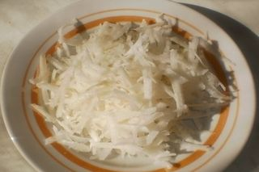
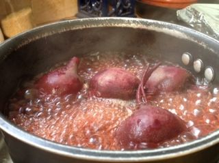
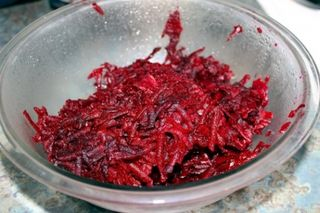
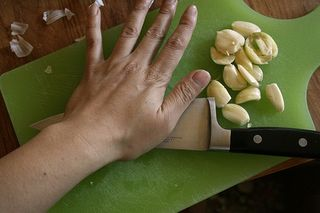
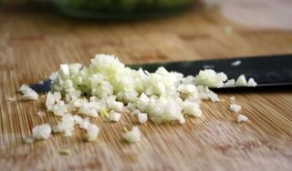
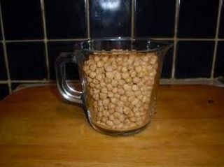
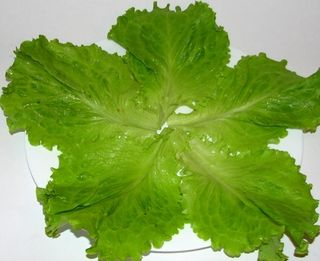

Шаг 1: Подготовим основные ингредиенты для салата.

Чёрную редьку необходимо тщательно промыть в проточной воде и очистить от кожуры. Это можно делать простым кухонным ножом или использовать для этих целей овощечистку, что во многом удобнее и функциональнее. Далее её стоит натереть на крупной тёрке. Переложить подготовленный овощ в отдельную миску.

Сахарную молодую свеклу промываем обильным количеством воды и ставим в кастрюлю, чтобы проварить. Даём закипеть воде и ставим на маленький огонь, варим, пока она не будет готова. Проверить это можно обычной зубочисткой или деревянной шпажкой. Овощ должен быть мягким и легко прокалываться.

Очищаем свеклу от кожуры и натираем также на крупной тёрке.

Чеснок отделяем от шелухи и моем в холодной воде. Пропускаем его через чесночницу или просто мелко нарезаем острым ножом. Перед нарезкой его можно немного придавить кончиком ножа, чтобы расплющить, как следует.
Шаг 2: Готовим соус из сухарей.

Сухари необходимо залить растительным маслом и добавить мелко нарезанный чеснок.

Главное сделать это за 5-10 минут до смешивания в салате, чтобы сухари немного размокли, но не превратились в кашу.

В отдельное сервировочное блюдо с широкими краями следует выложить ранее промытые и высушенные листья салата. Непосредственно на них выкладываем слой чёрной редьки, немного присаливаем и выкладываем далее слой свеклы. Так делаем несколько слоёв. В самом конце на поверхность салата высыпаем соус из сухарей и присыпаем мелко нарубленным зелёным луком.